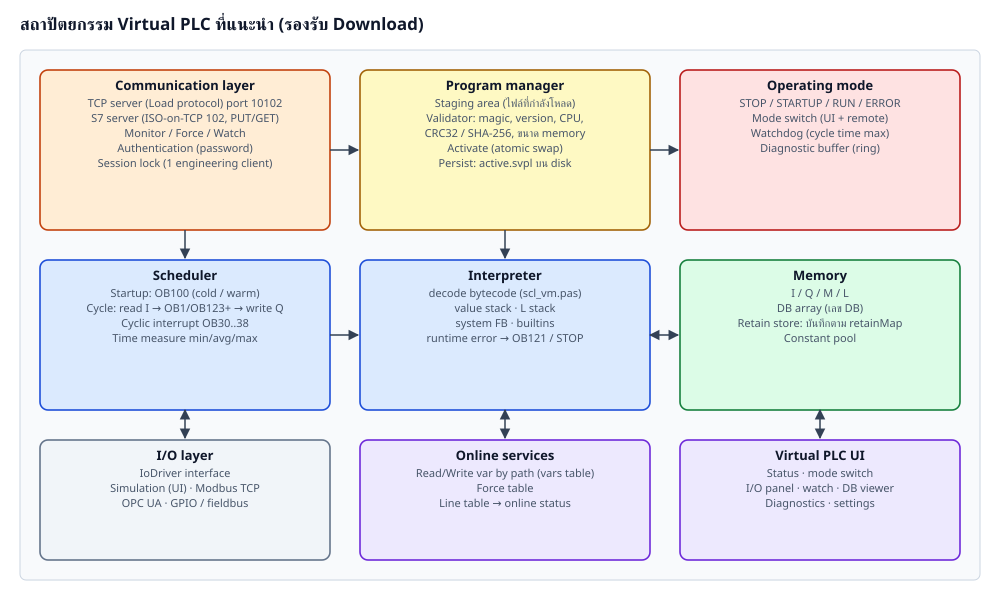
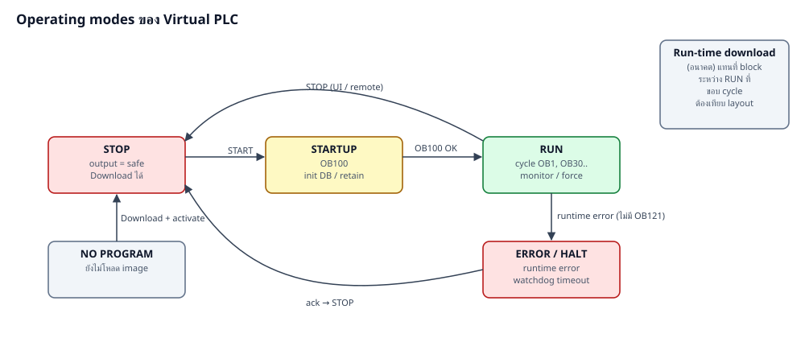
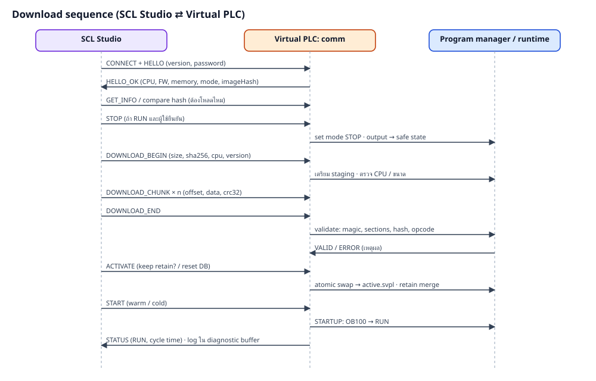

| ส่วน | หน้าที่ | แนวทาง implement (Lazarus) |
|---|---|---|
| Communication layer | รับคำสั่ง Download / mode / monitor จาก IDE | fcl-net ssockets (TInetServer) หรือ Synapse, thread แยก |
| S7 server (ทางเลือก) | ให้ HMI เดิมอ่าน/เขียน DB ด้วย PUT/GET | Snap7 server (snap7.dll) register area DB/I/Q/M ชี้ไปที่ memory ของ VM |
| Program manager | staging → validate → activate, เก็บ active.svpl | TSvImage.LoadFromStream + validator |
| Operating mode | STOP / STARTUP / RUN / ERROR, watchdog | state machine เปลี่ยนที่ขอบ cycle เท่านั้น |
| Scheduler | OB100, OB1/OB123+, OB30..38, วัด cycle time | thread runtime วน loop + TEvent สำหรับ min cycle |
| Interpreter | รัน bytecode | ต่อยอด TVirtualPlc.Execute (เพิ่ม instruction budget สำหรับ watchdog) |
| Memory | I Q M DB L C + retain store | TBytes ต่อ area (ห้าม reallocate ระหว่าง RUN ถ้า Snap7 ชี้อยู่) |
| I/O layer | แลกค่า I/Q กับโลกภายนอก | interface IIoDriver: ReadInputs, WriteOutputs, Start/Stop |
| Online services | อ่าน/เขียน/force ตัวแปรตาม path | ใช้ vars table + MemRead/WriteBits |
| Diagnostic buffer | บันทึกเหตุการณ์ (ring 500 รายการ) | mode change, download, runtime error พร้อม block/line |

Frame (little endian) 0 u16 magic 'SV' 2 u8 protocol version = 1 3 u8 command / response code (response = command | 0x80, error = 0x7F) 4 u32 sequence number (response คืนค่าเดียวกัน) 8 u32 payload length n 12 n payload 12+n u32 CRC32 (byte 0 .. 12+n-1)
| code | command | payload คำขอ | payload ตอบ |
|---|---|---|---|
| 01 | HELLO | client name, protocol ver, password hash (SHA-256) | cpu, vplc version, memory limits, mode, image name, image SHA-256 |
| 02 | GET_STATE | - | mode, cycle min/avg/max, last error |
| 03 | SET_MODE | 0 STOP, 1 RUN warm, 2 RUN cold, 3 memory reset | mode ใหม่ |
| 10 | DOWNLOAD_BEGIN | size u32, SHA-256, flags | max chunk size |
| 11 | DOWNLOAD_CHUNK | offset u32, data | received bytes |
| 12 | DOWNLOAD_END | - | VALID / รายการ error |
| 13 | ACTIVATE | flags: keep retain, reset DB start values, start after | ผล |
| 14 | DOWNLOAD_ABORT | - | - |
| 18 | UPLOAD | offset, length | ข้อมูล active.svpl |
| 20/21 | READ_VARS / WRITE_VARS | รายการ (address i64, vmType) / + value | values / status |
| 22 | FORCE | address, type, value / unforce | status |
| 30 | READ_DIAG | from index | รายการเหตุการณ์ |
| error code | ความหมาย |
|---|---|
| 1 | frame / CRC ผิด |
| 2 | ไม่ได้ authenticate / password ผิด |
| 3 | mode ไม่ถูก (ต้อง STOP) |
| 4 | magic ผิด |
| 5 | version ไม่รองรับ |
| 6 | CPU family ไม่ตรง |
| 7 | ใหญ่เกิน memory |
| 8 | hash ไม่ตรง |
| 9 | bytecode ไม่ถูกต้อง |
| 10 | มี session อื่นถืออยู่ |
| 11 | timeout |

procedure TRuntime.Execute; // thread
begin
while not Terminated do
begin
ApplyPendingModeChange; // จาก comm thread ผ่าน queue
case Mode of
pmStartup: begin RunOBs(100); Mode := pmRun; end;
pmRun:
begin
T0 := Now;
Io.ReadInputs(Mem.I);
ApplyForces;
RunOBs(1); // OB1 แล้ว OB123+ เรียงเลข
RunCyclicOBsDue; // OB30..38
ApplyForces;
Io.WriteOutputs(Mem.Q);
Stats.Add(Now - T0);
if Now - T0 > Watchdog then GoError('cycle time exceeded');
WaitMinCycle(T0);
end;
else
Sleep(10);
end;
end;
end;
type
TPlcMode = (pmNoProgram, pmStop, pmStartup, pmRun, pmError);
IIoDriver = interface
procedure ReadInputs(var I: TBytes);
procedure WriteOutputs(const Q: TBytes);
end;
TVirtualPlcHost = class
Image: TSvImage; // active program (scl_vmformat)
Vm: TVirtualPlc; // interpreter (scl_vm) - memory + execute
Mode: TPlcMode;
Diag: TDiagBuffer;
Io: IIoDriver;
function BeginDownload(Size: Cardinal; const Hash: TSha256): Integer;
function WriteChunk(Ofs: Cardinal; const Data: TBytes): Integer;
function EndDownload(out Errors: TStringList): Boolean; // validate
function Activate(KeepRetain, ResetDB: Boolean): Boolean;
procedure SetMode(M: TPlcMode; Cold: Boolean);
end;